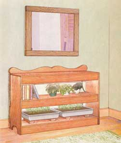
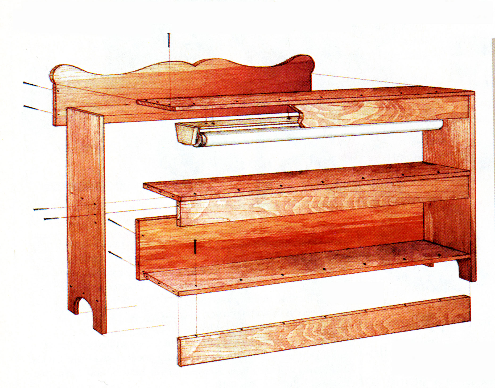

No more hauling in your lights every spring, setting them up for a few weeks of seed-starting and then storing them the rest of the year. With MOTHER’s grow light bookcase, your lights are ready whenever you need them - seed-starting in spring and fall, rooting summer cuttings of perennials and displaying flowering violets, orchids or other houseplants. Then when you don’t need all the shelves and lights for growing plants, you can use the unit as a bookcase. (And what homestead can’t use more bookshelves?) How-to books, healthy house plants and your favorite hot peppers will live happily together on MOTHER’s grow light bookcase.
I like to keep my carpentry projects as simple as possible, and you could build this one with just a handsaw and a hammer, if those were the only tools you had. Or just ask someone to cut the pieces for you. (If you do this, I recommend you buy the boards you need, bring them home, and measure and mark all the cuts clearly, then take them back to the store or to a friend to be cut.)
The cuts will be cleaner if they’re made with a power saw, and using screws and an electric drill will be easier and stronger than a hammer and nails. (If you don’t already own a rechargeable electric drill, I highly recommend them. I almost never use a hammer now that I have a cordless electric drill.) The curved cuts along the top trim and the bottom sides of the bookcase are optional. If you want to include them and have access to a saber saw or other way to cut them, they provide an attractive, ornamental touch.
To get started, first go to an electrical supply store and buy 4-foot, two-tube fluorescent light fixtures and quality cool-white or warm-white tubes. (You don’t need to buy the much more expensive special lights designed for plants - the inexpensive standard tubes work fine.) Take this article with you to the store, so the clerk can help you choose the best fixture style. If you’ve never worked with light fixtures before, have them show you how the fixture comes apart, so you can attach the frame to the bookshelves. You may also want to pick up a timer that will turn the lights on and off at whatever times you specify. Timers are inexpensive - just plug it into the wall outlet, then plug the light fixture into it.
Once you have the fixtures, you can determine the length of your shelf, and how wide to make the valances (the boards that will cover the front of the fixtures). The shelves will have to be long enough to hold the fixtures, of course, but you can make them longer if you want, giving you more room for books even when the lighted section is being used for plants. You can also decide how high you want each shelf and whether you want just two shelves or maybe three or four.
After you’ve chosen the dimensions you want, make a list of all the pieces and take it with you to the lumber store. One-by-10-inch poplar or pine boards probably will be your easiest and least expensive option, but whatever size and kind of lumber you choose, inspect each board carefully to be sure it’s not warped or damaged.
While you’re getting the lumber, shop for the hardware you’ll need. To put the unit together, you’ll want some 2-inch screws, plus a few short, fat screws to secure the fixtures under the shelves. If you’re inexperienced at building projects like this, don't hesitate to have the clerk help you figure out what you need. Get a counter sink bit to drill the starter holes in the boards and scoop out space for the screw heads to set cleanly into the boards without splintering. Buy some fine grade sandpaper, and, if you don’t already have one, I recommend a sanding block to hold the sandpaper and make sanding the boards easier.
After you have all the boards cut to length, mark and drill the starter holes, then sand each board. This is my favorite part: You’re almost ready to put everything together, and sanding pine is easy, smells great and the boards quickly become silky smooth.
You may want to have someone help you when you’re ready to screw everything together, especially if this is the first time you’ve built a project like this. Then, choose a finish. I used a cherry stain, covered with polyurethane to protect the wood from water spills. Follow the directions on the cans, and be sure to buy a good brush if you don't have a clean one at home.
Now, let it dry, plug it in and watch those little plants grow.
Decide what height and length you want to make your bookcase and fill in the blanks below to create your lumber shopping list.
1-by-10 boards:
2 sides @ _________________"
________ shelves @________ "
1-by-4 boards:
_______valances @_________"
1-by-6 boards:
2 backboards @ ____________"
|
 ILLUSTRATION: MELANIE POWELL How-to books, healthy house plants and your favorite hot peppers will live happily together on MOTHER’s grow light bookcase. |
 MELANIE POWELL Assembly diagram for the bookcase, seed-starting shelf and houseplant display case - easily built into one attractive piece of furniture. |
|